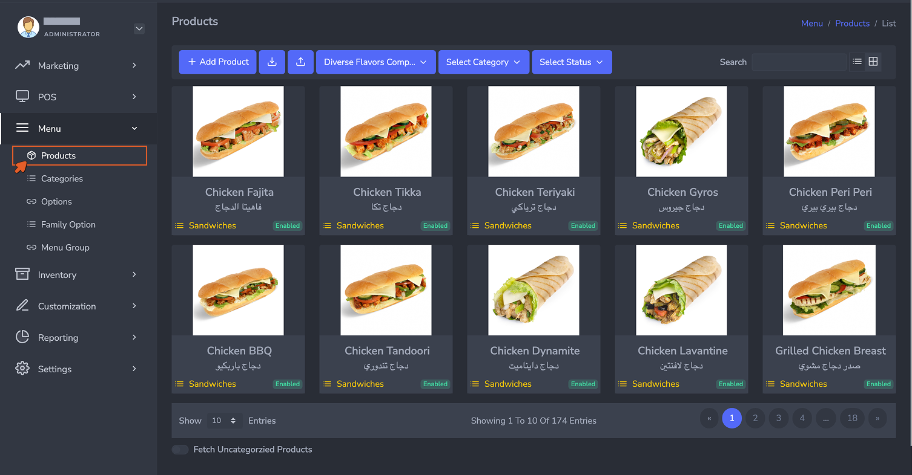
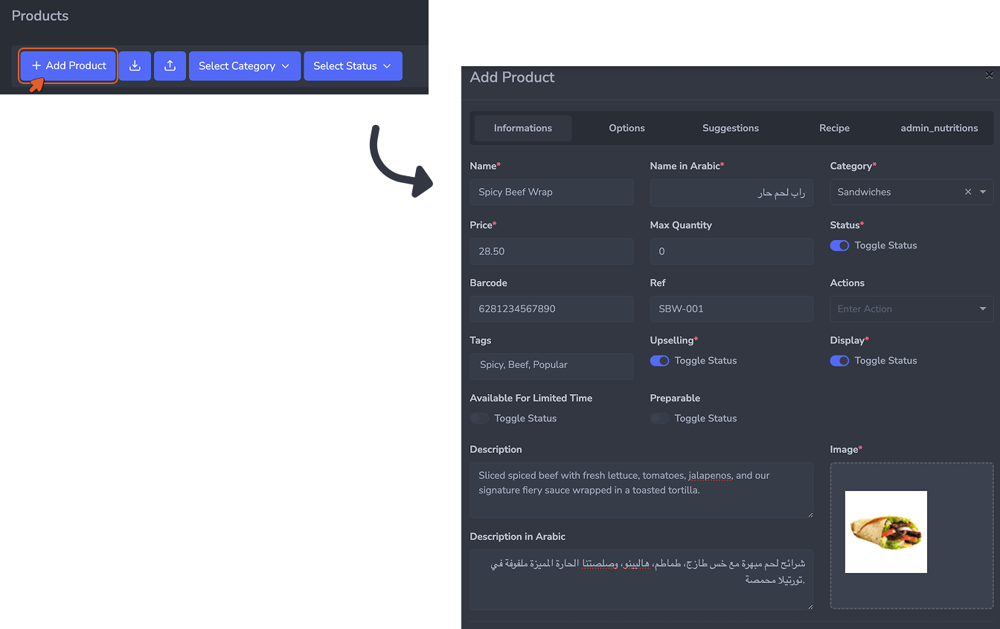

Step 01 — Define the Menu Building the Foundation: Your Menu Items and Raw Materials
The first step in setting up your inventory system is building your menu. Every item your customers can order through the POS must exist as a product in the system before recipes, ingredients, or stock tracking can be configured.
This step has no prerequisites. You start here.
الخطوة الأولى — تعريف القائمة بناء الأساس: عناصر القائمة والمواد الخام
الخطوة الأولى في إعداد نظام المخزون هي بناء قائمة الطعام. يجب أن يكون كل عنصر يستطيع عملاؤك طلبه عبر نقطة البيع (POS) موجوداً كمنتج في النظام قبل أن تتمكن من تهيئة الوصفات أو المكوّنات أو تتبع المخزون.
هذه الخطوة لا تتطلب أي متطلبات مسبقة. تبدأ من هنا.
Overview
نظرة عامة
Products are the final menu items your customers order. Creating them here is what allows the rest of the system to work — recipes get attached to products, and every POS sale references a product to know which ingredients to deduct from stock.
المنتجات هي العناصر النهائية في القائمة التي يطلبها عملاؤك. إنشاؤها هنا هو ما يُتيح لبقية النظام العمل بشكل صحيح — إذ تُربط الوصفات بالمنتجات، وكل عملية بيع عبر نقطة البيع تستند إلى منتج لمعرفة المكوّنات التي يجب خصمها من المخزون.
How to Access
كيفية الوصول
Navigate to Menu → Products from the left sidebar.
انتقل إلى القائمة ← المنتجات من الشريط الجانبي.
This opens the Products list view, where all existing products are displayed with their name, Arabic name, category, and status. From here you can search, filter by category or status, and manage existing items.
يفتح هذا عرض قائمة المنتجات، حيث تظهر جميع المنتجات الموجودة مع اسمها والاسم بالعربية والفئة والحالة. من هنا يمكنك البحث والتصفية حسب الفئة أو الحالة وإدارة العناصر الحالية.

The Products list view showing all menu items with their category and status tags. Use the grid or list toggle on the top right to switch views.
عرض قائمة المنتجات يُظهر جميع عناصر القائمة مع علامات الفئة والحالة. استخدم زر التبديل بين الشبكة والقائمة في أعلى اليمين لتغيير طريقة العرض.
Adding a New Product
إضافة منتج جديد
Click the + Add Product button in the top left of the Products list to open the Add Product form.
انقر على زر + إضافة منتج في أعلى يسار قائمة المنتجات لفتح نموذج إضافة المنتج.

The Add Product form opens as a modal with five tabs: Informations, Options, Suggestions, Recipe, and admin_nutritions. All required setup for inventory purposes happens in the Informations and Recipe tabs.
يفتح نموذج إضافة المنتج كنافذة منبثقة تحتوي على خمس تبويبات: المعلومات، الخيارات، الاقتراحات، الوصفة، وadmin_nutritions. جميع الإعدادات المطلوبة لأغراض المخزون تتم في تبويبَي المعلومات والوصفة.
The form is organized into five tabs. For the purposes of menu setup in this first-time configuration, focus on the Informations tab first.
يُنظَّم النموذج في خمس تبويبات. لأغراض إعداد القائمة في هذا التهيئة الأولى، ركّز أولاً على تبويب المعلومات.
Once all required fields are filled in, click Submit to save the product. It will immediately appear in the Products list and become available for recipe assignment. To discard the entry without saving, click Close.
بعد ملء جميع الحقول المطلوبة، انقر على إرسال لحفظ المنتج. سيظهر فوراً في قائمة المنتجات ويصبح متاحاً لتعيين الوصفة. للتراجع دون حفظ، انقر على إغلاق.
Tips for Efficient Menu Setup
نصائح للإعداد السريع للقائمة
- If you have a large product catalog, you can upload your menu in bulk using an Excel file. Prepare your menu items in the provided Excel template, then upload the file to automatically create all products at once. This significantly speeds up the initial setup and reduces manual entry errors.
- Make sure every product has its Status set to Enabled and a category assigned. Products without a category may not appear correctly on the POS or in reports.
- You do not need to fill in the Recipe tab at this stage. Recipe assignment is covered in Step 04. Focus here on getting every active product created with the correct name, category, price, and status.
- إذا كان لديك كتالوج منتجات كبير، يمكنك تحميل قائمتك دفعةً واحدة باستخدام ملف Excel. أعدّ عناصر قائمتك في قالب Excel المقدَّم، ثم ارفع الملف لإنشاء جميع المنتجات تلقائياً في آنٍ واحد. هذا يُسرّع الإعداد الأولي بشكل كبير ويُقلّل من أخطاء الإدخال اليدوي.
- تأكد من أن كل منتج تم تعيين حالته على مُفعَّل وأن له فئة محددة. المنتجات التي لا تحمل فئة قد لا تظهر بشكل صحيح على نقطة البيع أو في التقارير.
- لا حاجة لملء تبويب الوصفة في هذه المرحلة. يُغطّى تعيين الوصفة في الخطوة الرابعة. ركّز هنا على إنشاء كل منتج نشط بالاسم الصحيح والفئة والسعر والحالة.